26/06/2019 — Các điện tâm đồ liên tiếp tiến triển đều có giá trị chẩn đoán OMI do tắc LAD, nhưng không bao giờ đạt tiêu chuẩn STEMI
Bản dịch tiếng Việt của bài "Serial Evolving ECGs all diagnostic of LAD OMI, but never meet STEMI criteria" – Dr. Smith’s ECG Blog. Giữ nguyên toàn bộ 15 hình ảnh của bản gốc.
Một bệnh nhân 60 mấy tuổi gọi 911 vì đau ngực.
Nhân viên cấp cứu ngoài viện ghi một điện tâm đồ ở mốc thời gian ban đầu (time zero):

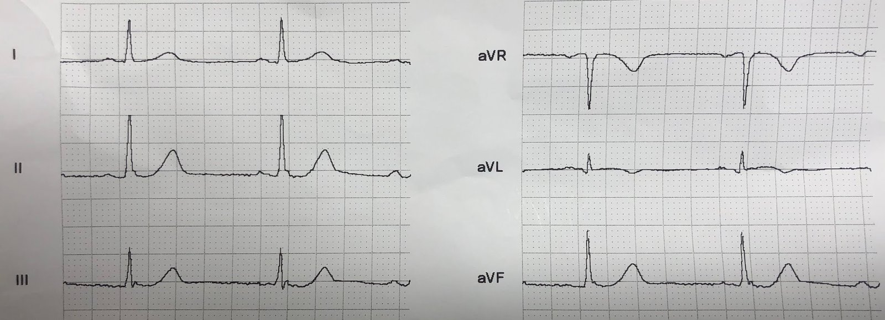

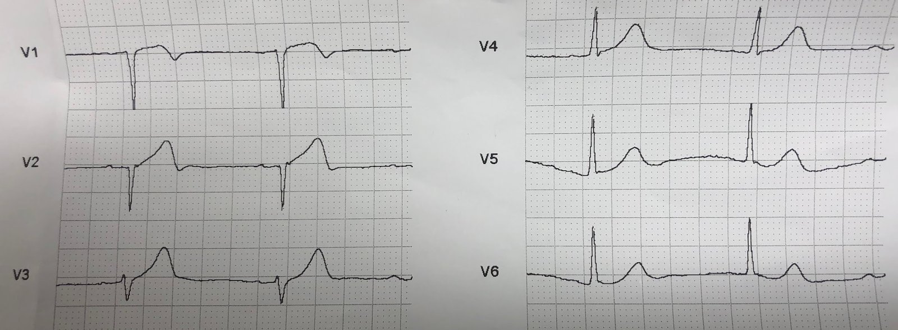
Không có ST chênh lên, nhưng V2 có một sóng T tối cấp rõ ràng. Các chuyển đạo thành dưới có ST chênh xuống rất nhẹ (điều này rất có ý nghĩa). aVL có ST chênh lên dạng vòm rất nhỏ trong bối cảnh QRS rất nhỏ. Tất cả những điều này đều rất, rất đáng nghi ngờ OMI do tắc LAD đoạn gần.
Họ ghi thêm một điện tâm đồ nữa ở phút thứ 20:

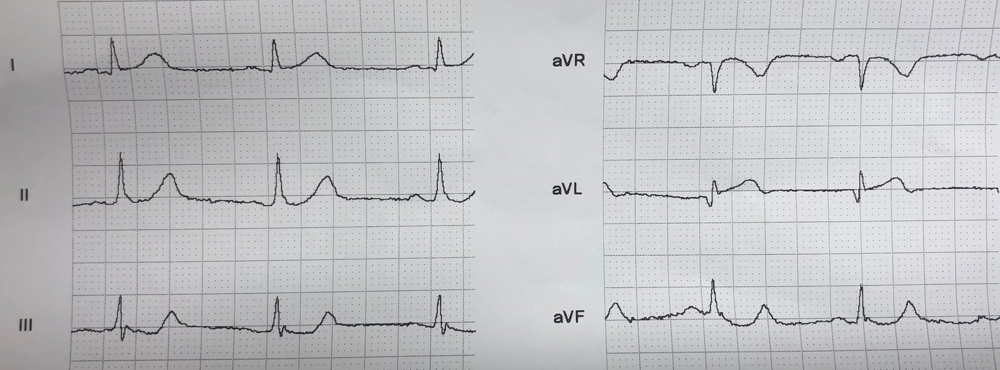

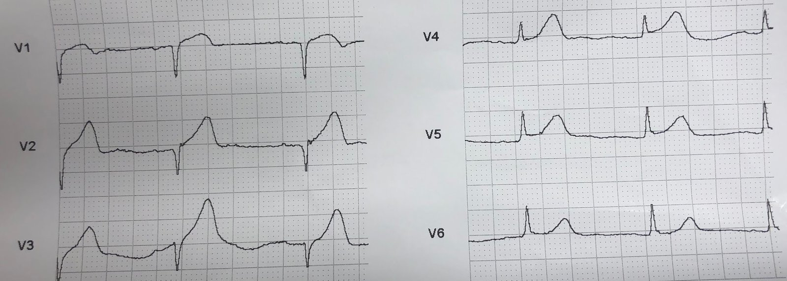
Hãy nhìn kích thước rất lớn của sóng T ở V4 so với sóng R.
ST chênh lên ở aVL tăng dần
ST chênh xuống soi gương ở thành dưới tăng dần Nếu bạn còn nghi ngờ tắc LAD ở điện tâm đồ đầu tiên, thì giờ không còn nghi ngờ gì nữa. Điện tâm đồ này có giá trị chẩn đoán
Ghi lại ở phút thứ 25:

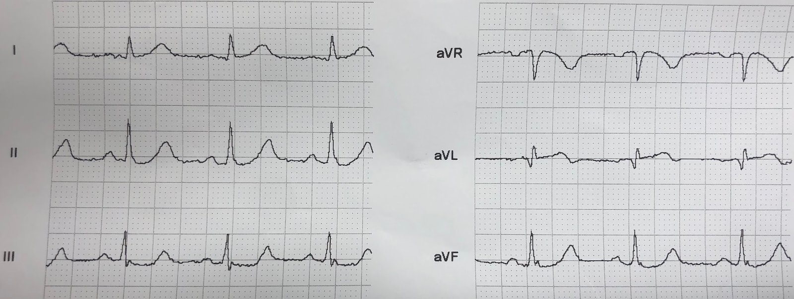

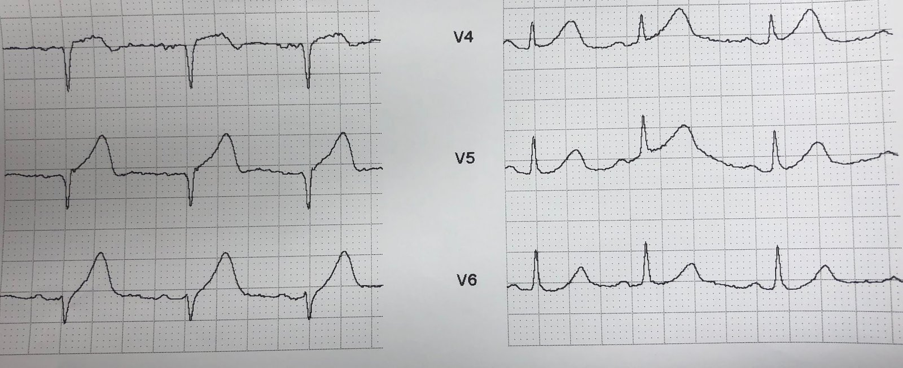
Hoàn toàn có giá trị chẩn đoán tắc LAD cấp.
Và một điện tâm đồ nữa ở phút thứ 30:

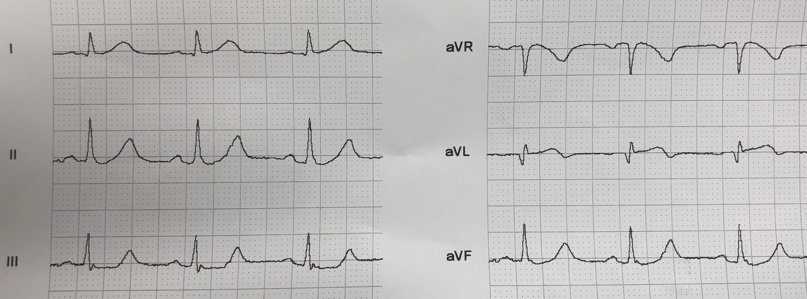

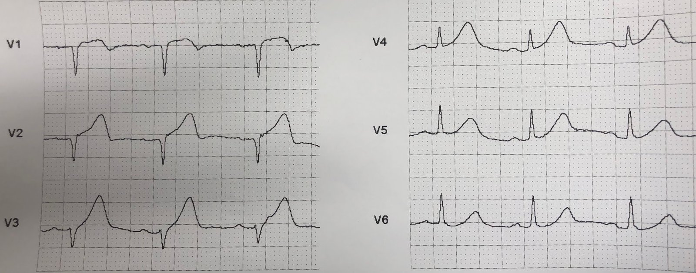
Bệnh nhân đến khoa cấp cứu (ED).
Đây là điện tâm đồ đầu tiên tại khoa cấp cứu (ở t = 40 phút):

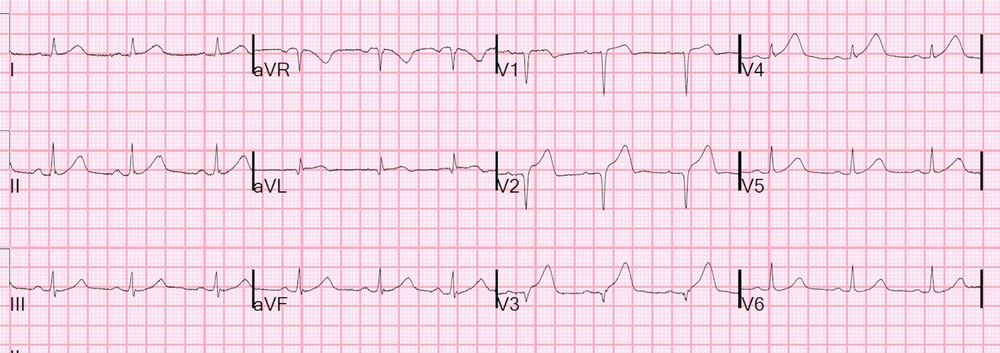
Bác sĩ điều trị chính mang điện tâm đồ này đến cho tôi, không kèm bất kỳ điện tâm đồ nào khác, và hỏi ý kiến tôi:
Trong 3 giây, tôi nói:
Tắc LAD cấp.
Riêng điện tâm đồ này đã đủ chẩn đoán tắc LAD, thậm chí không cần so sánh với các điện tâm đồ khác. Đồng nghiệp của tôi cũng nghĩ như vậy, nhưng chỉ muốn được xác nhận.
Phòng thông tim (cath lab) được kích hoạt.
Điện tâm đồ thứ 2 tại khoa cấp cứu, phút thứ 60

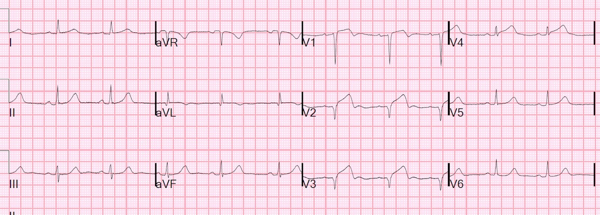
Máy tính vẫn không đưa ra nhận định STEMI
Phát hiện tắc LAD đoạn gần và đã đặt stent.
Điện tâm đồ sau tái tưới máu

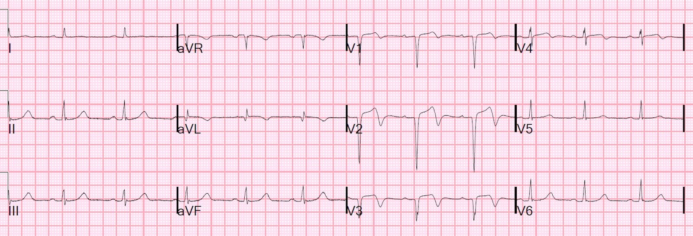
Ngày hôm sau

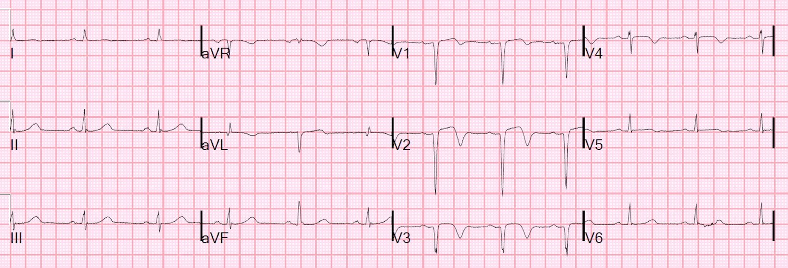
Troponin I đỉnh 85.6 ng/mL (OMI rất lớn)
Rối loạn vận động thành trước
Không có thời điểm nào máy tính đọc ra STEMI
Những điểm cần học:
1. Tắc LAD cấp thường không biểu hiện ST chênh lên đạt “tiêu chuẩn”
2. Hãy tìm sóng T tối cấp (so với biên độ/điện thế QRS)
3. Hãy tìm bất kỳ ST chênh xuống nào ở thành dưới, dù rất ít
4. Hãy ghi các điện tâm đồ liên tiếp.

===================================
Bình luận của KEN GRAUER, MD (26/6/2019):
===================================
Chúng tôi xin CẢM ƠN Dr. Smith về ví dụ tuyệt vời này cho thấy tiến triển liên tiếp của tắc LAD cấp (OMI) — bắt đầu từ giai đoạn trước viện — đi qua khoa cấp cứu — và sau khi tái tưới máu động mạch bị tắc.
- Tôi chỉ giới hạn bình luận ở Điện tâm đồ #1 = Điện tâm đồ ban đầu do nhân viên cấp cứu ghi tại hiện trường ở bệnh nhân 60 mấy tuổi bị đau ngực mới khởi phát này. Để rõ ràng — tôi đã ghép 2 phần của bản ghi này lại với nhau, và thêm một vài nét vẽ hỗ trợ hình dạng đoạn ST để dễ quan sát hơn (Hình 1).

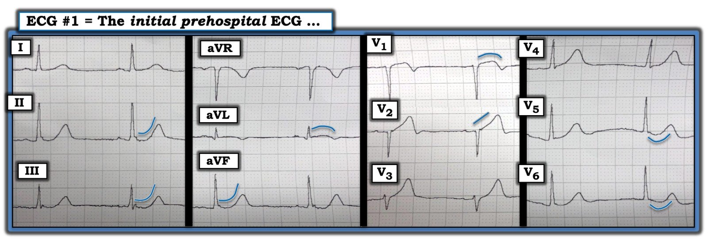
SUY NGHĨ CỦA TÔI về Điện tâm đồ #1 — Dr. Smith đã làm rất tốt việc mô tả lần lượt từng bản ghi những dấu hiệu quan trọng của 8 điện tâm đồ trong ca này.
- ĐIỂM MẤU CHỐT CẦN NHỚ: Với bệnh sử đau ngực mới–khởi phát ở bệnh nhân này — bạn phải 100% chắc chắn về nhu cầu phải thông tim khẩn trương chỉ từ điện tâm đồ thứ 1 này mà thôi. Nhận định lâm sàng của bạn về điện tâm đồ #1 ở Hình 1 phải là tắc LAD cấp cho đến khi chứng minh được điều ngược lại!
Dấu hiệu Điện tâm đồ MẤU CHỐT ở Hình 1:
- Chuyển đạo V2 và V3 là những chuyển đạo thứ 1 đập vào mắt tôi! Việc sóng T ở 2 chuyển đạo này là tối cấp hẳn là rõ ràng khi thấy những sóng T này không tương xứng như thế nào so với sóng r rất nhỏ ở V3, và việc không có bất kỳ sóng r nào ở chuyển đạo V2. Hãy lưu ý các sóng T này phình to ở đỉnh và rộng ở đáy như thế nào. Cũng lưu ý đoạn ST đi lên ở chuyển đạo V2 bị thẳng đuỗn (đường XANH vẽ chéo ở chuyển đạo này) — đến mức đoạn ST ở chuyển đạo V2 đã mất dạng lõm hướng lên bình thường.
- Có mất sóng R thành trước. Dường như có một sóng r nhỏ ban đầu ở chuyển đạo V1. Sóng r này mất hoàn toàn khi đến chuyển đạo V2 (chuyển đạo này biểu hiện một phức bộ QS sâu). Sóng r xuất hiện lại ở chuyển đạo V3 — nhưng vẫn nhỏ-hơn-mức-cần-có đáng kể đối với một chuyển đạo V3.
- Tiếp theo, xét các “chuyển đạo lân cận” — Có ít nhất 1 mm ST chênh lên kèm đoạn ST dạng vòm rõ ràng ở chuyển đạo V1 (đường XANH dạng “mặt mếu” ở V1). Đây không phải là hình dạng bình thường của chuyển đạo V1 — mà phản ánh sự lan rộng của quá trình đang diễn ra (tức là các sóng T tối cấp ở chuyển đạo V2 và V3). Do đó, các thay đổi sóng ST-T cấp tính bắt đầu sớm ngay từ chuyển đạo V1.
- Tiếp tục với khái niệm “chuyển đạo lân cận” — thay đổi sóng T tối cấp được thấy rõ ở chuyển đạo V4 (với sóng T lớn không tương xứng ở V4, cao hơn một nửa chiều cao sóng R ở chuyển đạo này — đồng thời sóng T ở V4 này phình to ở đỉnh và rộng ở đáy). Mặc dù sóng T ở chuyển đạo V5 và V6 không đặc biệt cao — chúng có cùng hình dạng đỉnh-phình-to-hơn-mức-cần-có mà chúng ta đã thấy ở các chuyển đạo V2-đến-V4. Chuyển đạo V5 và V6 cũng biểu hiện đoạn ST dạng lõm và hơi chênh xuống — mà trong bối cảnh của mọi dấu hiệu khác thì không bình thường.
- LƯU Ý: Việc khẳng định rằng sóng ST-T ở cả 6 chuyển đạo trước tim đều bất thường trên điện tâm đồ #1 sẽ được trình bày qua so sánh với 2 bản ghi cuối cùng (ghi sau tái tưới máu) trong ca này.
ĐIỂM THEN CHỐT (PEARL): Khi cân nhắc vị trí có khả năng của tắc LAD cấp — tôi tìm 3 Manh mối sau đây, mà khi hiện diện sẽ gợi ý một tổn thương LAD ở đoạn gần hơn:
- Có ST chênh lên (hoặc ít nhất đoạn ST dạng vòm trông có vẻ cấp tính) ở chuyển đạo aVL? ( = Có, ở Hình 1 — như được gợi ý bởi đường XANH dạng vòm ở chuyển đạo aVL). Lưu ý rằng đoạn ST dạng vòm ở chuyển đạo aVL này kết thúc bằng sóng T đảo ngược phần tận cùng. Cũng có một sóng q rộng đáng ngạc nhiên ở chuyển đạo aVL, có thể phản ánh quá trình cấp tính đang diễn ra.
- Có ST chênh xuống soi gương ở chuyển đạo thành dưới? ( = Có, dưới dạng đoạn ST lõm — như được làm nổi bật bằng các đường XANH cong ở các chuyển đạo thành dưới này). Sóng T ở các chuyển đạo thành dưới cũng trông nổi bật ở Hình 1 (hơi lớn hơn, và đỉnh phình to hơn mức cần có).
- Các thay đổi sóng ST-T cấp/tối cấp bắt đầu sớm đến mức nào ở các chuyển đạo trước tim? ( = ST chênh lên nhẹ kèm ST dạng vòm bắt đầu sớm ngay từ chuyển đạo V1 ở điện tâm đồ #1).
ĐIỀU CỐT LÕI: Với bệnh sử đau ngực mới khởi phát — trong vòng một phút (hoặc ít hơn) sau khi xem điện tâm đồ ban đầu này ở Hình 1, bạn phải có khả năng: i) Tự tin nghi ngờ mạnh mẽ tắc LAD đoạn gần cấp cho đến khi chứng minh được điều ngược lại; và, ii) Biết rằng bạn phải liên hệ ngay với bác sĩ tim mạch trực đồng thời với việc kích hoạt phòng thông tim!
- Theo Dr. Smith — chẩn đoán OMI do tắc LAD đoạn gần cấp được củng cố không còn nghi ngờ gì bởi các bản ghi tiếp theo — nhưng các bản ghi tiếp theo này không cần thiết để biện minh cho việc kích hoạt phòng thông tim ngay lập tức trong ca này. Tất cả những gì cần thiết, với bệnh sử đau ngực mới — là một cái nhìn nhanh vào điện tâm đồ #1 ở Hình 1.